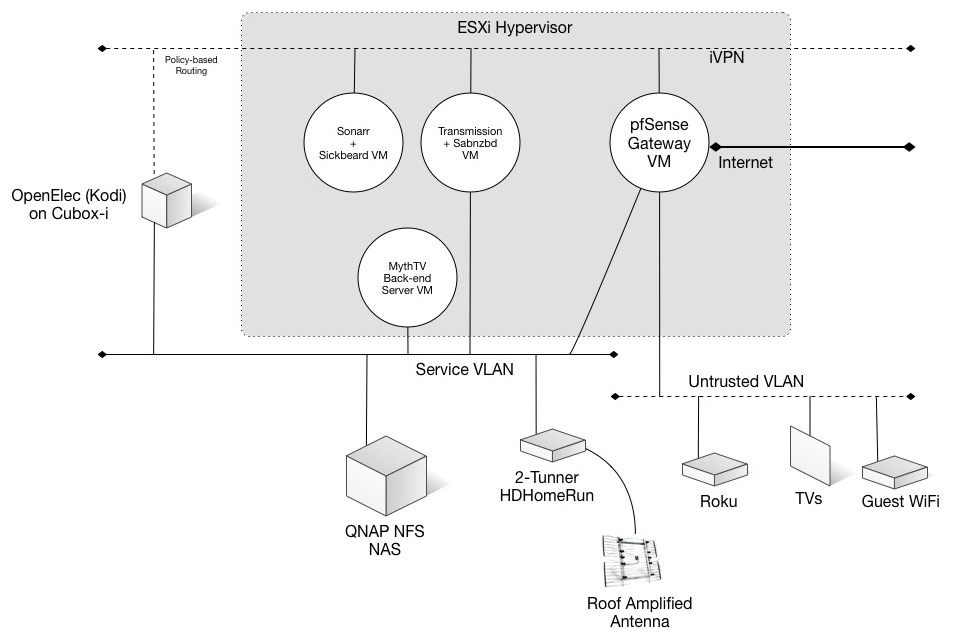

Introduction
I’ve been building home entertainment systems for more years I care to admit. It’s always been a hobby of mine and I find it extremely fun when things finally work as a whole, resulting in a complete operational system. I’ve never done it for money, but I’ve made them for friends and family and of course myself.
But in recent years, the dream of having all content in digital format, available on-demand at any point in any device has pretty much become a reality. BluRay, DVD, Laser Disk and VHS do not deserve my nostalgia (I’ll make an exception for vinyl and metal tape cassettes). And once things are in the digital realm, functionality really comes down to software.
Unfortunately, technology and lifestyle evolve much faster than legislation and regulation, and gray areas abound when it comes to online content. This particular system that I’ll detail here falls in that category, since it relies on media file downloads that in some countries, under some conditions, could be considered illegal, so before you attempt any of this, please make sure you research your local laws and make your own judgment call. This design is for educational purposes only.
Also, let me point that this article takes a systems-view approach, and it’s not meant to be taken as a step-by-step guide. For each one of the components, there are plenty of those available online.
Goals
This particular system is designed with the following goals in mind:
- Leverage OTA HDTV available in the US via ATASC.
- Full TiVo-like DVR functionality, all in HD.
- The front-end boxes should be completely silent and store no media data locally.
- Leverage a NAS system over NFS using Gigabit Ethernet to store all content (WiFi is not a requirement for this system).
- As many components as possible should run in software, particularly in VMs.
- Security and privacy is of the highest importance in this system and that should be a key element everywhere in the design.
- The majority of the software used should be open source and capable of running on Linux.
- The number of paid subscriptions for any service should be kept to a minimum.
Design
As in most systems, there were already pre-existing components. In this case:
- A 12 TB QNAP TS-659 Pro II NAS capable of multiple file protocols, NFS being one of them.
- An Atom-based 8-core, 32 GB of RAM VMware ESXi system.
- A well-engineered L3 network with L2 VLAN segmentation.
- A fast Internet access link with no monthly download caps.
- A gateway/firewall. In this case, psSense running on a VM on the same ESX system.
- A Channel Master CM-4228HD High VHF, UHF and HDTV amplified roof antenna, with an 8-Port Bi-Directional Cable TV HDTV Amplifier Splitter Signal Booster with Passive Return.
- Amplifiers, speakers and TVs.
So the chosen design is as follows:

Let’s analyze each choice, reasoning, features and caveats.
The PVR.
If TV is an important part of the home entertainment system, then a good Personal Video Recorder is key.
There are not a lot of options out there for open source PVRs. I took some time and I looked at the feature set of several available, considering stability, features, maturity, etc., and I keep coming back to MythTV. The system has matured over the years, and most of the instability that I saw in the early days is gone, since it was mostly due to drivers for a number of cards and software glitches in basic operations. The team has taken good care of fixing memory leaks and make the software much more robust.
Pros:
- It has all features you can expect from a TiVo.
- Capable of automatically skip commercials. Not perfect, but works on >70% of the time.
- Easy to setup in its own distribution. One popular one is MythBuntu.
- Very granular scheduling system.
- For today’s computers, it runs very well on a VM. It’s perfectly capable of managing 4 HD streams simultaneously while transcoding other shows.
Cons:
- Includes a lot of modules that in this design would remain unused (Music, Videos, Weather, etc.) but they can’t be easily disabled in Mythbuntu unless you recompile from source.
- The MythFrontend client works well, but it’s pretty old-school and difficult to configure for set-top boxes unless you make a dedicated version for it.
Setup
The VM is setup with 4 vCPUs and 8 GB of RAM. For storage, mount the /var/mythtv/recordings against a reachable volume in the NAS.
As I’ll discuss later, MythTV will take care of 1) live TV, and 2) recordings for non-available downloads, like the daily local news, special live events, or shows that are not easily available for download from other sources.
The EPG (electronic programming guide) is downloaded through SchedulesDirect, which requires a $25 yearly subscription. The service is very stable. Once setup, it just works.
The Tuners
Most of the issues I’ve had with MythTV in the past were related to drivers and the way specific tuner cards were or were not handled. Fortunately, that’s a thing of the past since the appearance of the SiliconDust HDHomeRun network tuners. These little boxes connect directly to both, the coax cable with your antenna signal, and an Ethernet port that sends IP streams with the content. MythTV supports them natively and this allows for it to easily run on a VM, decoupled from actual physical hardware.
Each of these boxes (around $130 each) will provide you with 2 simultaneous network streams in full 1080i. You can perfectly get by with just one, if you are not planning to record more than two shows at the time.
TV Shows downloads
This component is optional; since you can use MythTV to record all shows available via network television. However, if you are a cable customer this setup may not work for you very well. Most cable providers will encrypt the signal making impossible for the tuners to be able to record shows from cable channels as easy as OTA channels. Heck, they even encrypt standard channels available OTA once it traverses their system!
For that reason and others, you may decide to implement this TV shows download capability.
Most folks are aware of BitTorrent as peer-to-peer file sharing protocol. It’s an outstanding innovation, but since you are actually sharing (or transmitting) content while you download, you may be liable for “illegal distribution” if your identity is compromised, depending on the current legislation in your country.
A better solution is something that has been around for ages: Usenet, in which you only download. Originally designed as a text-only distributed discussion system, it wasn’t long until binary files started being encoded in text-based formats, effectively turning Usenet into a binary distribution system.
In recent times, the NZB XML format was born, which includes all metadata associated with specific TV Shows, making searching, retrieval and reassembly of shows extremely easy with the right software.
For this system design, I’ve included SabNZBd, an excellent system to automatically download, reassemble and post-process TV Show using NZB files directly from Usenet servers via the NNTP protocol.
On top of that, you need a system that will make easy and user-friendly to select what shows you want, in what resolution, or which season to record and which one to skip.
There are several alternatives in that field, most notoriously SickBeard, (and it’s fork SickRage), and Sonarr. The last one seems to give BitTorrent also more relevance as a protocol in addition to NNTP. I have both of them setup in this design but they are not both mandatory. You can perfectly just select one.
The final component of this equation is the Usenet server itself. Those accounts used to be free back in the day, but now since binary downloads are a primary use of those systems, one must choose a provider, and therefore pay their subscription fees.
The good thing is that these providers are becoming more robust, offering better services, like https and VPN access. Some offer special viewers or binary usenet software. There are a few that I know to be reliable, in no particular order:
To be clear, on a yearly basis, these services are not free, so you may need to balance the need of using them vs. the limited options of recording them yourself via OTA, or the increased risk of using BitTorrent for downloads. You may also need to subscribe to an indexing service to easily find the shows you are looking for, but that needs to be evaluated on a case-by-case scenario depending on how difficult is to find your shows.
Adding some Privacy
In order to mitigate some of the risks, a good practice is to use a permanent VPN connection to an external VPN server. This effectively obfuscates your IP address and your ISP cannot know what you are doing. You are still subject to traffic analysis, but exactly pin pointing what you were doing when becomes much harder and expensive.
I have a separate post here on how to select a good VPN service, but as important as that is, it’s absolutely critical to have a correct setup for your router.
Having a permanent VPN outbound interface requires not only to set it up properly, but also to enable policy-based routing, to determine what systems in your network and what protocols or destinations you should send through the tunnel. Sending everything is not only unrealistic, but not a very good idea (you will have issues every time you try to do online banking via VPN for example). This topic alone should have its own separate post given the importance and caveats involved, and I may just do that later on.
Once your tunnel is setup, you’ll need to test for leaks, or any setting that may be giving away identifiable information about your network. Among those tests, DNS Leak tests and IPv6 Leak tests are among the most important. You may also want to setup DNSCrypt for non-VPN traffic regardless.
In this design, the DHCP server is aware of every device and every MAC address in the network, denying access to any unknown entity (a whitelist-only model). This makes easy to determine which devices will always be sent through the tunnel.
The Front-ends
For the front-ends, I wanted to select software that was above all, stable, extensible, well tested and well supported out there. It’s the most “visible” part of the system, and any issues in the playback of the content would lower the quality of the experience.
My choice was Kodi (formerly XBMC) due to all the points above, and having had experience with it before. Kodi, however, is a software that needs to run on an OS. In fact, Kodi can run on virtually anything, which is one of it’s greatest features.
The best choice for a dedicated box was to use LibreELEC, a project that provides a full Linux OS with only Kodi in it. Even better, there are many hardware makers that make LibreELEC an option at shipping time.
One of the best LibreELEC systems available is the CuBox-i, particularly the 4x4 model. For around $170 you get everything you need in a box that will fit in your hand.
Best of all, because it includes an infrared receiver, you can grab any remote control you like, and program the keys you want into Kodi commands. Of course, you need to know how to program the LIRC key codes, which takes some time, but it’s nothing you won’t find in the forums.
Kodi has available a very large number of independently made plugins. One of them will allow you to connect directly to MythTV and leverage its content. This plugin is relatively limited in terms of commanding functionality. It will play well what’s recorded, and will let you watch and pause live TV, but recording shows is limited to single specific events. If you want to exercise a more complete control like all new recordings of a particular show for example, you need to use MythWeb, or the MythFrontend client form your computer to set that up. It cannot co-exist with Kodi on OpenELEC (or I haven’t found a way how to yet).
A second system I built uses Hardkernel’s Odroid-C2 platform that has its own LibreELEC distribution. What I like about this system vs. the CuBox-i, is that it’s not only just $46, but also is capable of decoding H.265, the highest quality codec available, 4K-capable.
NetFlix
There is an unofficial Kodi plugin to enable NetFlix if you have an account. I have not tried it and I have no idea if it would work on LibreELEC, but my design also includes a Roku device to use with NetFlix, VUDU and others. The main reason why I have it is to watch live football via Fubo.tv (I mean real football, or what Americans call soccer), which requires a subscription.
Besides, it seems to me that everything you can plug on a TV these days (and the TVs themselves) natively support NetFlix, so I don’t see the need to stress on that.
Conclusion
There are many options to build systems like this, but given that the components are getting more standard and the tools are getting more powerful, the potential is huge. I have not touched on automatic transcoding of files for specific devices (ideal for traveling) or archiving/expiration, but this design just scratches the surface.
comments powered by Disqus